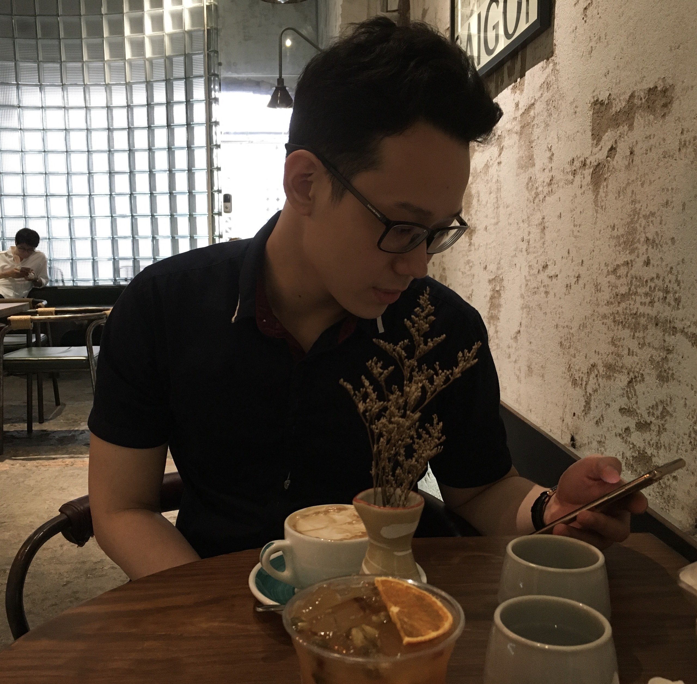
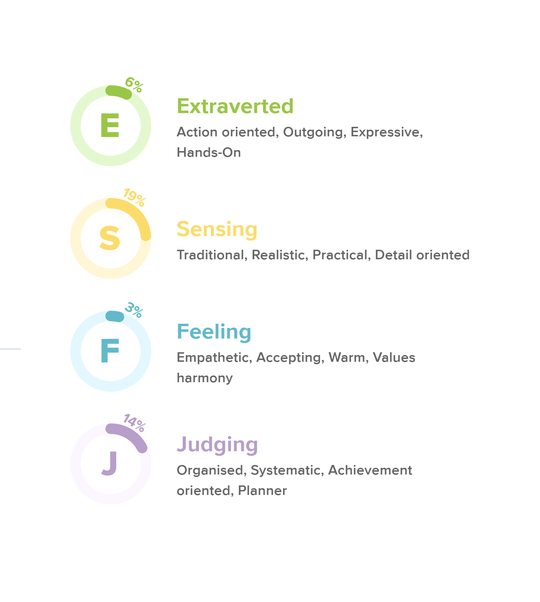
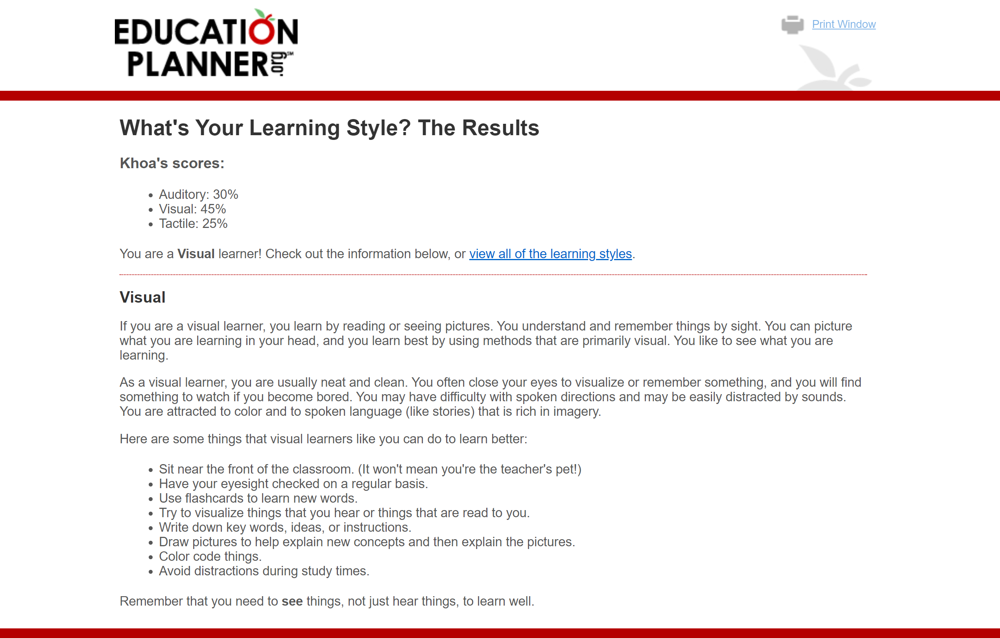
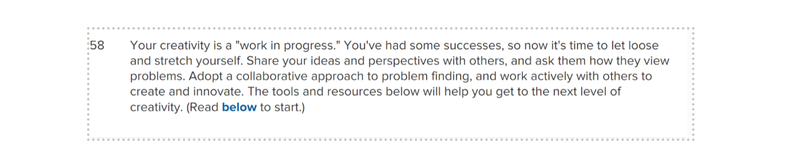

Dang Hoang Anh Khoa(Project Designer)
- 
 They call me Ethan and my full name is Dang Hoang Anh Khoa. My student ID is s3836606. I got the designer position for my team project and I’m happy with that although I'm the oldest member. In my leisure time, I like listening to music, playing video games and learning new things from Youtube or external sources are my hobbies. Especially coding something fun such as Microbit and websites. This is my second semester in this school so my academic knowledge is limited. I’ve experienced some interesting languages such as Python, Css, HTML and a bit about JavaScript.
They call me Ethan and my full name is Dang Hoang Anh Khoa. My student ID is s3836606. I got the designer position for my team project and I’m happy with that although I'm the oldest member. In my leisure time, I like listening to music, playing video games and learning new things from Youtube or external sources are my hobbies. Especially coding something fun such as Microbit and websites. This is my second semester in this school so my academic knowledge is limited. I’ve experienced some interesting languages such as Python, Css, HTML and a bit about JavaScript.
- 
Although all online tests did not show exactly what I am, I must recognize that I am an introverted person who, once in the blue moon, shares about myself with others in every community whenever I trust them. I am interested in learning knowledge throughout what I witnessed around my life and from external sources. I always accept practicing sections that can help me improve my academic performance such as programming and dealing with code. I think the learning style test convinced me exactly when saying I am a visual person. Beside those tests, I got a high score on the creativity test. To sum up, I would say I can take responsibility in my team as the designer is the exact choice and I will finish my work efficiently.
Although reconciliation is my weakness. I can find myself in another fluent position in team as supporter or executive to contribute efficiently for the final success of our team. Besides that, I am receptive with different ideas to come up with the final decision. Creativity is also my strength if you need my brain works 100% for insane ideas.